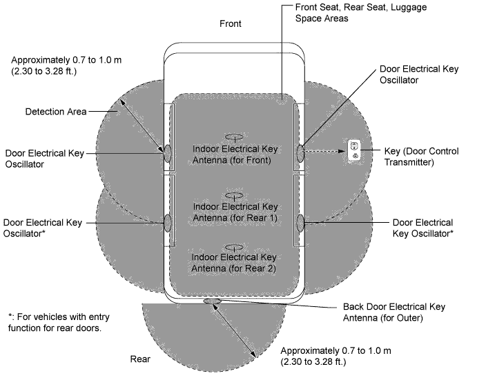
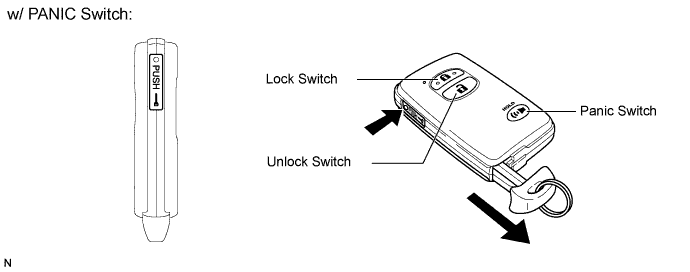
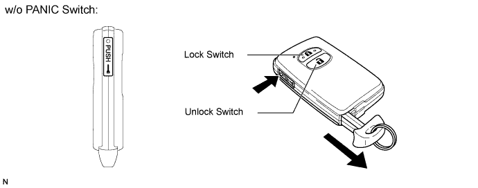
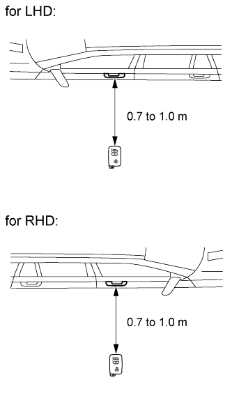
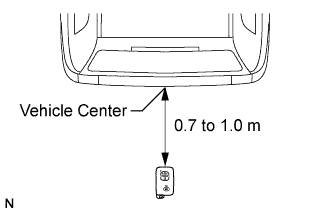

ENTRY AND START SYSTEM (for Entry Function) > SYSTEM DESCRIPTION |
| ENTRY AND START SYSTEM DESCRIPTION |
In addition to conventional mechanical key and wireless door lock control functions, the entry and start system enables door locking/unlocking, steering lock releasing, engine control system starting and back door opening without operating the key. The only requirement is that the key is in the possession of the user.
| DETECTION AREA |

Precautions for the entire system:
| FUNCTION OF MAIN COMPONENTS |
| Component | Function |
| Certification ECU (Smart key ECU assembly) | Controls the entry and start system in accordance with signals from each oscillator, various switches, ECUs and the key.
|
| Main body ECU | Controls the power source mode function in accordance with signals from various switches, ECUs and the combination meter.
|
| ID code box (Immobiliser code ECU) |
|
| Indoor electrical key antenna (for front, rear 1 and rear 2) | Receives a request signal from certification ECU (smart key ECU assembly), and forms the detection area in the vehicle interior. |
| Door control receiver | Receives the ID code from the key in the actuation area and transmits it to the certification ECU (smart key ECU assembly). |
| Back door electrical key antenna (for outer) | Receives a request signal from the certification ECU (smart key ECU assembly), and forms the actuation area around the back door. |
| Back door opener switch | Transmits a back door open request signal to the main body ECU. |
| Back door lock switch | Transmits a back door lock request signal to the certification ECU (smart key ECU assembly). |
| Door electrical key oscillator (for driver, front passenger, rear LH*3, rear RH*3 side doors) | Receives a request signal from the certification ECU (smart key ECU assembly), and forms the detection area around each door. |
| Outside door handle (for driver, front passenger, rear LH*3, rear RH*3 side doors) (antenna) | Transmits request signals. |
| Outside door handle (for driver, front passenger, rear LH*3, rear RH*3 side doors) (touch sensor) | Detects when a person touches the inside of the outside handle. |
| Outside door handle (for driver, front passenger, rear LH*3, rear RH*3 side doors) (lock switch) | Transmits door lock request signals to the certification ECU (smart key ECU assembly). |
| Key |
|
| Wireless door lock buzzer Combination meter
| When the certification ECU (smart key ECU assembly) detects human errors such as those below, it warns the driver by sounding the wireless door lock buzzer*, displays information and sounds the buzzer in accordance with the request signal from the ECU.
|
| CONSTRUCTION AND OPERATION |
Key:
A total of 7 keys can be registered.
Electrical key transmitter:
The electrical key transmitter consists of a mechanical key, a transmitter function for the wireless door lock control and a transceiver for the entry and start system.


Oscillator (each door oscillator, front, rear 1 and rear 2 indoor antenna, and back door antenna)
Each oscillator transmits the request signal received from the certification ECU (smart key ECU assembly), and forms a key detection area to detect the presence of a key. The detection area formed by each door oscillator and back door outer antenna is approximately 0.7 to 1.0 m (2.30 to 3.28 ft.) from the outside handle of each door or the center of the rear bumper.
| ENTRY FUNCTION OPERATION |
The entry and start system has the following functions.
| Function | Outline |
| Mechanical Key | Operation is the same as a conventional mechanical key. |
| Wireless Door Lock Control | This function remotely locks and unlocks all doors and the back door. Operation is the same as the wireless door lock control system. However, receiver in the certification ECU (smart key ECU assembly) uses the entry door control receiver to control locking and unlocking. |
| Entry Illumination | When a person carrying the key enters the detection area, the door will enter unlock standby mode and room light will illuminate. |
| Entry Unlock | When the key is located in the detection area of the door oscillator, the door will unlock by touching the inside of the outside door handle. |
| Entry Unlock Mode Switching (Click here) | Changes the doors that can be unlocked with the entry unlock function between 2 modes.
|
| Entry Lock | When the key is located in the detection area of the door oscillator and the engine switch is off, the door can be locked by pressing the lock switch on the outside door handle. |
| Entry Back Door Open | When the key is in the detection area of the back door antenna (outer), the back door opens by pressing the back door opener switch. |
| Memory Call | This function operates the driving position memory system in accordance with the key ID code. |
| Pressing the door handle entry lock switch for approximately 3 seconds or more causes all power windows and the sliding roof to close while sounding the wireless buzzer*2. |
| Key Lock-in Prevention | Prevents lock-in of the key if the door is locked using the outside door handle while the key is still inside the vehicle. |
| Warning | When any of the situations below occur, the entry and start system causes the certification ECU (smart key ECU assembly) to sound the buzzer in the combination meter and the wireless door lock buzzer*2, and display information in order to alert the driver.
|
| Battery Saving | If the key is constantly located within the actuation area of the door oscillator, the system maintains periodic communication with the key. Therefore, if the vehicle remains parked in that state for a long time, key battery and vehicle battery could be drained. For this reason, the vehicle has controls for saving battery power. |
| Key Cancel (Click here) | The following key functions can be canceled:
|
| WIRELESS DOOR LOCK AND UNLOCK AND PANIC* FUNCTION |
| ENTRY UNLOCK FUNCTION |
The detection area is formed by communication between a door oscillator and the certification ECU (smart key ECU assembly) when the door is locked in order to detect the person carrying the key.
When the person carrying the key enters the detection area around the vehicle, the matching of the ID codes for a door oscillator and key will automatically be performed. After the matching is completed, the door will enter unlock standby mode.
In unlock standby mode, the antenna built into the outside handle starts sensing. If the outside handle is held (the back side of the handle is touched), the door unlock operation will be performed. At this time, the hazard warning light blinks twice and the wireless door lock buzzer sounds twice*.
If any of the doors are not opened after a door unlock operation, all doors will automatically lock after 30 seconds.
| ENTRY LOCK FUNCTION |
After leaving the vehicle carrying the key, push the lock switch on the outside handle when all the doors are closed.
The certification ECU (smart key ECU assembly) determines whether the key is located inside or outside of the cabin based on the information from a door oscillator and indoor antenna. Then matching of the ID codes is performed.
When the matching result shows that the ID codes of the key and indoor antenna do not match and the ID codes of the key and door oscillator match, the door lock function will operate. At this time, the hazard warning lights blink once and the wireless door lock buzzer sounds once*.
If the key is located inside of the cabin, the door lock function will not operate and the alarm buzzer (beep sound) will sound for 2 seconds*.
| ENTRY BACK DOOR OPEN FUNCTION |
| PREVENTION OF KEY LOCK-IN FUNCTION |
If you attempt to lock the door through keyless operation (move the lock knob to the lock position and then close the door) with the key in the cabin, the system determines that the key is located in the cabin and unlocks the door.
If the back door is closed with the key in it, the alarm will sound and the back door can be opened only when all the doors are locked in order to prevent key lock-in in the vehicle.
| ENTRY ILLUMINATION FUNCTION |
| ENTRY POWER WINDOW FUNCTION* [REMOTE FUNCTION] (DOOR WINDOW AND SLIDING ROOF CLOSE OPERATION ONLY) |
Pressing the door handle lock switch for 3 seconds or more operates the door window close operation of all of the windows and the sliding roof close operation.
If the entry power window function is operating and the door handle lock switch is released, the entry power window operation will stop.
| MEMORY CALL FUNCTION (w/ Seat Position Memory System) |
After unlocking the driver door using the key ID and opening the driver door, the seat automatically moves to the position associated with the key ID.
| WARNING FUNCTION |
General:
When any of the situations below occur, the entry and start system responds to alert the driver.
| Warning Function Operation Condition | Situation |
| Shift lever not in P (power source cut reminder) vehicle exit warning | A |
| Key reminder warning | B |
| Shift lever in P (power source cut reminder) vehicle exit warning | C |
| Entry door ajar warning | D |
| Passenger has brought key out of vehicle warning | E |
| Key is not within detection area warning | F |
| Key lock-in prevention function buzzer | G |
| Key battery low warning | H |
Situation A:
Shift lever not in P (power source cut reminder) vehicle exit warning
With shift lever not in P, door is opened and vehicle exit (while holding key) is attempted
| Reason for warning: Sudden vehicle start prevention, vehicle theft prevention, vehicle roll-away prevention | |||
| Warning start condition: Shift lever is not in P, engine switch is on (ACC) or on (IG), driver side door is opened and vehicle speed is 0 km/h (0 mph) | |||
| Warning stop condition: Engine switch is off, shift lever is in P, vehicle speed is above 0 km/h (0 mph), or driver side door is closed | |||
| Warning description | Combination meter buzzer | Multi-buzzer | Sounds continuously (beep) |
| Combination meter display | Combination meter information | "Shift to P Range" | |
| Telltale | None | ||
| Wireless buzzer | Sounds continuously (beep)*
| ||
| Recommended user action | Move shift lever to P | ||
With shift lever not in P, door is opened, key is brought out of vehicle, door is closed, and movement away from vehicle is attempted
| Reason for warning: Sudden vehicle start prevention, vehicle theft prevention, vehicle roll-away prevention | |||
| Warning start condition: Shift lever is not in P, engine switch is on (ACC) or on (IG), opened driver side door is closed, vehicle speed is 0 km/h (0 mph) and key is not in detected in vehicle interior and luggage interior | |||
Warning stop condition:
| |||
| Warning description | Combination meter buzzer | Multi-buzzer | Sounds continuously (beep) |
| Combination meter display | Combination meter information | Information below is displayed alternately on combination meter "Shift to P Range" "Key is not detected" - "Check key position" | |
| Telltale | None | ||
| Wireless buzzer | Sounds continuously (beep)*
| ||
| Recommended user action | Move shift lever to P | ||
Situation B:
Key reminder warning
Steering lock/unlock set, driver door is opened and movement away from vehicle is attempted
| Reason for warning: Vehicle theft prevention, required by law | |||
| Precondition: Remote start is not operating | |||
Warning start condition: One of following conditions is met
| |||
Warning stop condition: One of following conditions is met
| |||
| Warning description | Combination meter buzzer | Multi-buzzer | Sounds intermittently (several "pon" sounds) |
| Combination meter display | Combination meter information | None | |
| Telltale | None | ||
| Wireless buzzer | None | ||
| Recommended user action | If engine switch is on (ACC) or on (IG), turn engine switch off and close driver door | ||
Situation C:
Shift lever in P (power source cut reminder) vehicle exit warning
With shift lever in P, driver door is opened, key is brought out of vehicle, driver door is closed, and movement away from vehicle is attempted
| Reason for warning: Vehicle theft prevention, "Engine control system cannot be restarted" prevention, battery depletion prevention | |||
| Warning start condition: Shift lever is in P, engine switch is on (ACC) or on (IG), opened driver side door is closed and key is not in detected in vehicle interior and luggage interior | |||
| Warning stop condition: Engine switch on (ACC) or off, or key is detected in vehicle interior and luggage interior | |||
| Warning description | Combination meter buzzer | Multi-buzzer | Sounds once (1 "pon" sound) (when key is not detected continuously, sounds again when vehicle is first driven) |
| Combination meter display | Combination meter information | "Key is not detected" - "Check key position" | |
| Telltale | None | ||
| Wireless buzzer | Sounds 3 times (short beeps)*
| ||
| Recommended user action | Turn engine switch off and exit vehicle while holding key | ||
With shift lever in P and either engine switch on (ACC) or steering lock/unlock set, driver door is opened, user moves away from vehicle, and door handle lock switch is pressed in an attempt to perform entry lock operation
| Reason for warning: Vehicle theft prevention, battery depletion prevention | |||
| Precondition: Change door control lock switch from off to on | |||
| Warning start condition: Shift lever is in P, engine switch is on (ACC) or on (IG), all doors closed and key is detected in vehicle exterior, key is not detected in vehicle interior, vehicle speed is 0km/h. | |||
Warning stop condition: One of following conditions is met
| |||
| Warning description | Combination meter buzzer | Multi-buzzer | None |
| Combination meter display | Combination meter information | None | |
| Telltale | None | ||
| Wireless buzzer | Sounds for 60 seconds (long beep)*
| ||
| Recommended user action | Turn engine switch off and perform entry lock operation | ||
Situation D:
Entry door ajar warning
With one vehicle door open, entry lock operation is attempted
| Reason for warning: Vehicle theft prevention | |||
| Precondition: Engine switch on (ACC) or off, and one door open | |||
| Warning start condition: After preconditions are met, entry lock operation is performed | |||
| Warning stop condition: Engine switch is on (ACC) or on (IG), all doors are closed, wireless unlock is performed, entry unlock operation is performed or 10 seconds have passed after warning start | |||
| Warning description | Combination meter buzzer | Multi-buzzer | None |
| Combination meter display | Combination meter information | None | |
| Telltale | None | ||
| Wireless buzzer | Sounds continuously (beep)*
| ||
| Recommended user action | Close all doors and perform entry lock operation | ||
Situation E:
Passenger has brought key out of vehicle warning
With engine switch in condition other than off, key is brought out of vehicle by passenger
| Reason for warning: "Engine control system cannot be started" prevention | |||
| Warning start condition: Engine switch is on (ACC) or on (IG), opened door other than driver side door is closed, vehicle speed is 0 km/h (0 mph) and key is not in detected in vehicle interior and luggage interior | |||
| Warning stop condition: Engine switch on (ACC) or off, or key is detected in vehicle interior and luggage interior or vehicle speed is more than 0 km/h (0 mph) | |||
| Warning description | Combination meter buzzer | Multi-buzzer | Sounds once (1 "pon" sound) (when key is not detected continuously, sounds again when vehicle is first driven) |
| Combination meter display | Combination meter information | "Key is not detected" - "Check key position" | |
| Telltale | Illuminates | ||
| Wireless buzzer | Sounds 3 times (short beeps)*
| ||
| Recommended user action | Check if the passenger who exited the vehicle has the key or not | ||
Situation F:
Key is not within detection area warning
With key not in vehicle cabin or key battery depleted, engine switch on (ACC) or on (IG) operation is attempted
| Reason for warning: User confusion prevention | |||
| Warning condition: Engine switch is not off and key is not detected in vehicle interior | |||
| Warning description | Combination meter buzzer | Multi-buzzer | Sounds once (1 "pon" sound) |
| Combination meter display | Combination meter information | "Key is not detected" - "Check key position" is displayed for 10 seconds, then display ends | |
| Telltale | None | ||
| Wireless buzzer | None | ||
| Recommended user action | Check if the key is within the detection area of the vehicle cabin If key is within the vehicle interior, built-in battery may be depleted If wireless door lock switch on key is pressed, check if indicator on key illuminates If indicator does not illuminate, replace the built-in battery It is recommended that battery be bought at dealer, but battery can be replaced according to user preference | ||
Situation G:
Key lock-in prevention function buzzer (for cabin)
With key in vehicle cabin, vehicle is exited and door handle lock switch is pressed in an attempt to perform entry lock operation
| Reason for warning: Key reminder vehicle theft warning prevention | |||
| Warning condition: Engine switch off, all doors closed, door handle lock switch on and key is detected in vehicle interior | |||
| Warning description | Combination meter buzzer | Multi-buzzer | None |
| Combination meter display | Combination meter information | None | |
| Telltale | None | ||
| Wireless buzzer | Sounds for 2 seconds (long beep)*
| ||
| Recommended user action | Pick up key that is in vehicle interior and perform entry lock operation again | ||
Situation H:
Key battery low warning
Key with almost depleted battery is used to drive vehicle
| Reason for warning: Helpful function | |||
| Warning condition: After engine switch not off condition continues for 20 minutes or more, engine switch is changed from not off to off, key battery is low and key is detected in vehicle interior | |||
| Warning description | Combination meter buzzer | Multi-buzzer | Sound once (1 "pon" sound) |
| Combination meter display | Combination meter information | "Low Key Battery" - "Have your vehicle checked by a dealer" | |
| Telltale | None | ||
| Wireless buzzer | None | ||
| Recommended user action | Replace key built-in battery with new one It is recommended that battery be bought at dealer, but battery can be replaced according to user preference | ||
| BATTERY SAVING |
Vehicle battery saving function:
In the entry and start system, signals are emitted outside of the vehicle at a prescribed interval (0.25 seconds) when the doors are locked. Therefore, the vehicle battery could be drained if the vehicle remains parked for a long time. For this reason, the controls listed below exist.
| Condition | Control |
Both conditions below are met for 10 days:
| Signal transmission interval is extended from 0.25 to 0.75 seconds |
Both conditions below are met for 15 days:
| Signal transmission interval is extended from 0.75 to 2.25 seconds |
Both conditions below are met for 30 days:
| Automatically deactivates the entry and start system |
Key battery and vehicle battery saving function:
In the entry and start system, if the key is constantly located within the vehicle exterior detection area of the doors, the system maintains periodic communication with the key. Therefore, if the vehicle remains parked in that state for a long time, the key battery and the vehicle battery could be drained. For this reason, if this state continues for more than 10 minutes, the entry and start system automatically becomes deactivated.
Reinstatement Conditions:
| KEY DIAGNOSTIC MODE (Using the intelligent tester) |
Connect the intelligent tester to the DLC3.
Turn the engine switch on (IG).
Turn the intelligent tester on.
Enter the following menus: Body / Entry & Start / Key Communication Check.
Check the values by referring to the table below.
| Tester Display | Inspection Range |
| Overhead + Driver Side [*1] | Door electrical key oscillator (for Driver Side) |
| Overhead + Passenger Side [*2] | Door electrical key oscillator (for Front Passenger Side) |
| Overhead + Driver Side Rear [*3]* | Door electrical key oscillator (for Driver Side Rear) |
| Overhead + Passenger Side Rear [*4]* | Door electrical key oscillator (for Passenger Side Rear) |
| Overhead + Front Room [*5] | Indoor electrical key antenna (for Front Floor) |
| Overhead + Rear 1 Room [*6] | Indoor electrical key antenna (for Rear 1 Floor) |
| Overhead + Back Door (inside) [*7] | Indoor electrical key antenna (for Rear 2 Floor) |
| Overhead + Back Door (outside) [*8] | Back door electrical key antenna (for Outer) |
When the electrical key transmitter is brought near the selected oscillator/antenna, check that the wireless door lock buzzer sounds.
 |
*1: Door electrical key oscillator (for Driver Side)
*5: Indoor electrical key antenna (front inside transmitter)
*6: Indoor electrical key antenna (rear 1 inside transmitter)
*7: Indoor electrical key antenna (for rear 2 inside transmitter)
 |
*8: Back door electrical key antenna (for Outer)